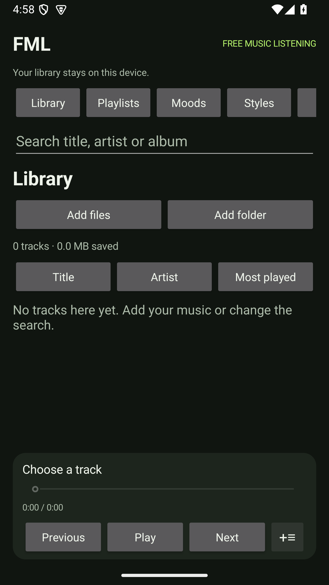
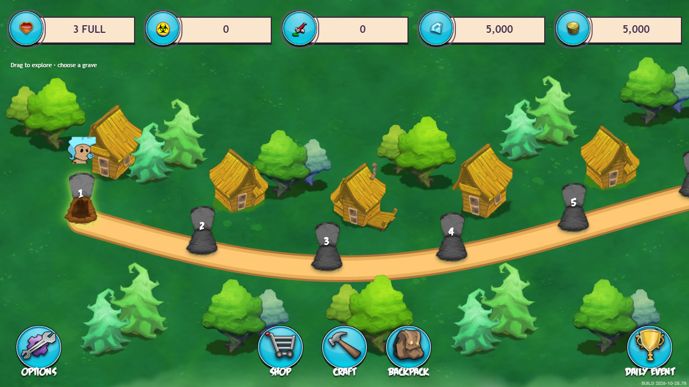
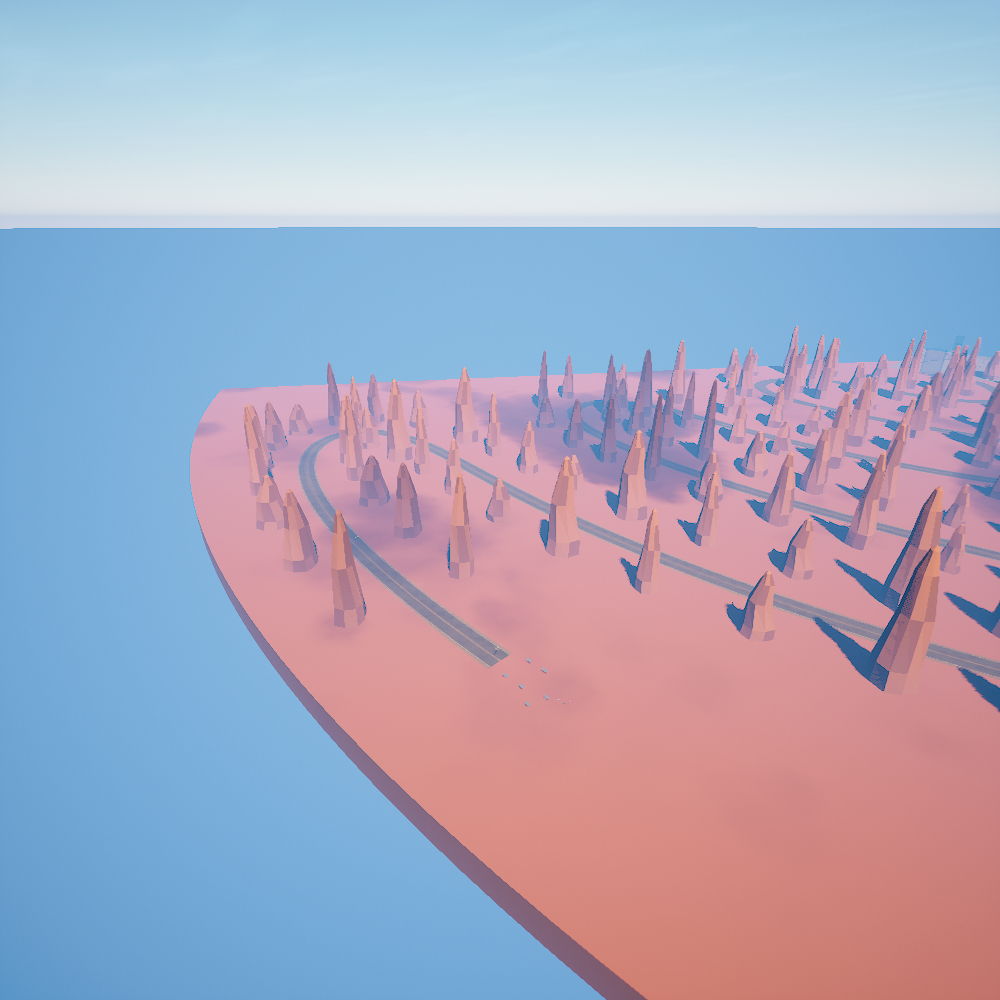

· Living Table
The game keeps going. So do we.
Our post-mortem points to three priorities: a dependable first game, a reason to return, and premium personalization worth owning. Here is what the alpha proved—and what comes next.

From the workbench
What changed, what we tested, and what still needs proving. Four projects, told through recorded work and development screenshots.
· Living Table
Our post-mortem points to three priorities: a dependable first game, a reason to return, and premium personalization worth owning. Here is what the alpha proved—and what comes next.
Latest update November 19, 2026. Earlier project retrospectives were compiled November 18, 2026. Screenshots show the captured revision; later fixes are described separately.
FML · Records through 1.5.5

Recent FML work focused on predictable playback and a skin-testing loop that does not charge testers. Swiping the app from Android Recent apps now stops playback, fades and samples, removes the notification and closes the playback service. Using Home still allows background listening.
The private test now offers all 23 additional skins through a clearly labeled “Test purchase — Free” flow. Cancelling leaves access unchanged; completing unlocks the selected skin. Resetting test access and restoring repeats the local receipt loop. Classic Journey remains free.
This is a simulation, not a real Google payment. It does not prove checkout, refunds or restoration after reinstalling; uninstalling clears the local test receipts.
The recorded validation includes 55 JVM tests, release lint with no errors, and Android checks for cancellation, unlock, reset/restore isolation and playback-service shutdown. The physical Motorola swipe-away acceptance test was still pending in that record.
Real Google Play billing remains a separate validation step. The app and test builds remain private.
Explore FMLLiving Table · First Steps alpha

Living Table’s early alpha brings physical and virtual chess into the same experience. Recent work added a direct virtual start, while earlier headset sessions exercised moving between physical and virtual play without abandoning the game.
The experience includes guided setup, contextual help, saved games and named positions. A real board is optional when starting a virtual game. When physical recognition is uncertain, manual confirmation remains available.
Earlier development sessions include founder-confirmed physical/virtual round trips, retained board placement and sleep/wake checks. The 0.1.94 record reports a successful build, headset installation and startup. Full founder acceptance for that revision remained pending.
These checks are not universal recognition tests. Lighting, viewing angle and occlusion still matter, and the recorded hands-on work focuses on Quest 3.
Explore Living TableNovember 19, 2026 · Cradle to the Grave
Crafting, two-hand Quest controls and a mobile-to-VR co-op prototype: see the latest development update and express interest in private testing. Ages 13+.
C2G update & playtestingCradle to the Grave · Mobile 102 / Quest preview 9

Cradle to the Grave has progressed through playable mobile work and a first-zone Quest preview. The recent mobile pass focused on a specific combat problem: mole enemies needed to emerge visibly before attacking, then dive and resume their animation in the right order.
Mobile build 102 corrected emergence and dive sequencing and prevented attacks while moles were underground or not yet fully visible. The work also protected an active round from a delayed shared-progress update.
Recorded checks covered popup visibility, authored mole encounters, all 330 sprite-sheet frames, native combat and standalone play. Quest preview 9 was installed and launched on Quest 3, and the ten-level gameplay regression checks passed.
The Quest work is still a first-zone preview, not the full campaign. These records do not establish a public store launch or final founder acceptance. Private builds stay private.
Explore Cradle to the GraveKing of the Cinder · Recorded November 15–16, 2026

The playable route connects a vehicle-combat race, an on-foot crossing of the Killing Fields and a climb to the Power Tower. Finishing that journey meant simplifying the start: choose a car, confirm readiness and get into the race.
Development passes aligned firing with the crosshair, stabilized the mounted weapon and made rocket and tracer effects easier to follow. Creator playtests confirmed those improvements and a complete route ending in summit victory.
Later work added pickups and persistent phase timers. A private test confirmed that a canyon timeout returned to car selection and began another race without reconnecting. The first-phase countdown was observed in play; later-phase displays were compiled but not separately replayed in that recorded check.
Two-person synchronization, contested summit defense and larger multiplayer sessions still needed further verification. The configured player limit is not evidence of a full-capacity human playtest.
Read the illustrated November 16 story →
Explore King of the Cinder· Studio update
The studio homepage now brings Living Table, FML, Cradle to the Grave and King of the Cinder together, with dedicated pages for each.
Explore Living Table’s mixed-reality chess alpha and C2G’s developing mobile and Quest experiences.
FML’s product page explains local music listening and the private Android test. Test access remains invitation-based.
King of the Cinder’s illustrated development story follows the work from canyon driving to the summit.

· King of the Cinder
A look at finishing the playable project, the choices behind it and the work that follows.
Read the illustrated story